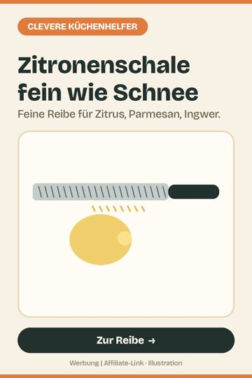
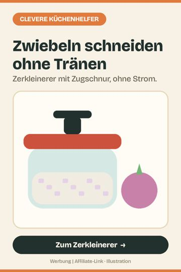
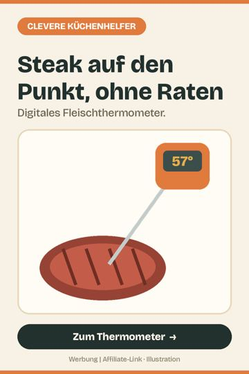
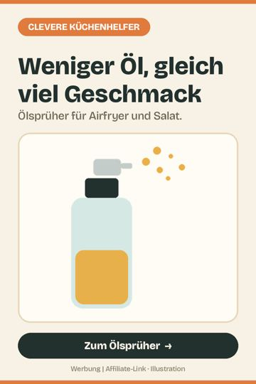
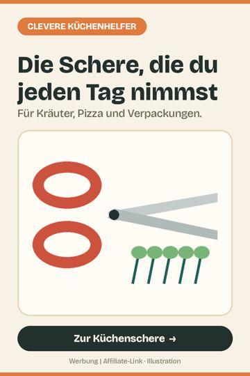
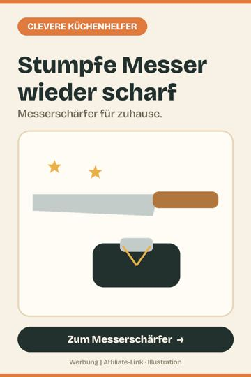
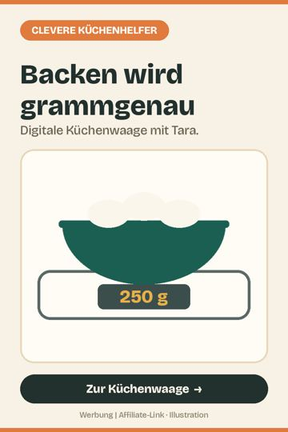
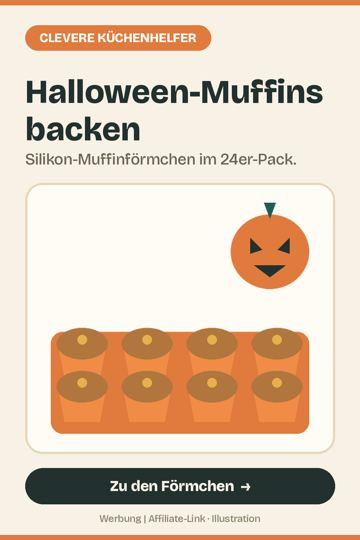
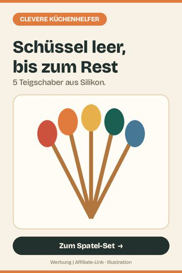
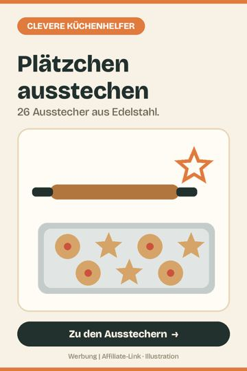

Kleine Küchenhelfer, die beim Kochen und Backen jeden Tag Zeit sparen. 10 Helfer, ausgewählt nach Nutzen im Alltag und vielen guten Kundenbewertungen.

Die Reibe, die alles fein macht
Feine Reibe für Zitronenschale, Parmesan, Ingwer oder Schokolade.
Bei Amazon ansehen *
Zwiebeln hacken ohne Tränen
Zwiebeln, Kräuter und Knoblauch in Sekunden zerkleinern, ganz ohne Strom. Ein praktischer Küchenhelfer für schnelle Alltagsküche.
Bei Amazon ansehen *
Nie wieder Fleisch auf gut Glück
Kerntemperatur messen statt raten: digitales Fleischthermometer für Steak, Braten, Hähnchen und Grillgut. Küchenhelfer für perfekte Garstufen.
Bei Amazon ansehen *
Öl sprühen statt kippen
Mit dem Ölsprüher dosierst du Öl gleichmäßig und sparsam, für Pfanne, Salat oder Heißluftfritteuse.
Bei Amazon ansehen *
Eine Schere nur für die Küche
Eine eigene Schere für die Küche: für Kräuter, Pizza, Speck oder Verpackungen. Kleiner Küchenhelfer, der jeden Tag gebraucht wird.
Bei Amazon ansehen *
Stumpfe Messer? Nicht mehr.
Scharfe Messer machen Kochen sicherer und schneller. Messerschärfer für zuhause.
Bei Amazon ansehen *
Grammgenau backen
Backen gelingt mit genauen Mengen: digitale Küchenwaage aus Edelstahl für Backen und Kochen.
Bei Amazon ansehen *
Halloween-Muffins ohne Papierchaos
Für Halloween-Muffins, Kürbis-Cupcakes und Kindergeburtstag: 24 Silikonförmchen statt Papier, spülmaschinenfest und immer wieder nutzbar.
Bei Amazon ansehen *
Kein Teigrest mehr in der Schüssel
Von Halloween-Kuchen bis Plätzchenteig: Fünf Silikonspatel holen jeden Rest aus der Schüssel und halten auch in der heißen Pfanne.
Bei Amazon ansehen *
Plätzchen-Saison kann kommen
Sterne, Herzen, Tannen und mehr: 26 Ausstechformen aus Edelstahl für Weihnachtsplätzchen und Butterplätzchen.
Bei Amazon ansehen *